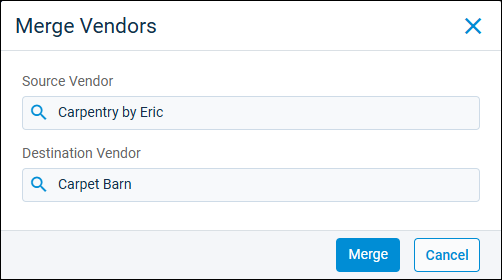

Source: https://rmxhelp.rentmanager.com/Topics/Express/Action/Vendors-Merge.htm
Merge Vendors
Rent Manager provides the ability to merge one vendor's transaction history and contacts with another current vendor. This action copies the applicable information and contacts from the source vendor to the destination vendor's record and then removes the source vendor from the Vendors page in Rent Manager. For example, if you accidentally have one vendor listed under multiple vendor names and you want a continuous and consolidated history of the vendor's transaction history, merging vendors can be a useful action to save the time it would take to correct the mistake.
Related Privileges
| Group | Privilege | Column |
|---|---|---|
| Payables | Vendors | View, Edit |
For more information, refer to Control User Access.
To merge vendors, do the following:
-
Go to
 arrow_forward Payables arrow_forward General arrow_forward Merge Vendors.
arrow_forward Payables arrow_forward General arrow_forward Merge Vendors.
-
In the Source Vendor field, select the vendor whose transaction history and contacts you want to merge to a destination vendor.
-
In the Destination Vendor field, select the vendor who inherits the transaction history and contacts of the source vendor.
-
When you are satisfied with your selections, click Merge.
-
Select Yes on the Merge Vendors confirmation pop-up.
The vendors are merged successfully and can be viewed on the Vendors page.